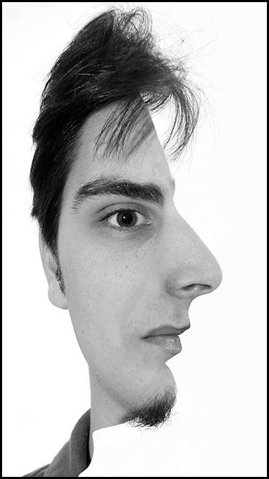

Áron Kovács
Wanabe software developer
Bio
asdasd
Work experience
- 2017-2018: Project engeneer, technical assistant: Civil engineering systems, techological piping - ACIS Complex Ltd.
- 2016:Technical engineer, designer: AC and heatpump systems - Budatech Ltd.
- 2012-2014: Surveyor assistant, draftsman - GEOFFICE Ltd., GEOriental Ltd.
- from 2008: AutoCAD private lectures for university students
- from 2008: Technical assistant, draftsman, 2D-3D visualisator : Landscape- and gardenarchitecture - Kert-Vonal Design Studio
- from 2008: IT assistant - Kert-Vonal Design Studio
Studies
- 2018: Green Fox Academy - Softver development - JavaScript
- 2009-2016: Szent István Univerity, Faculti of architecture - Technical manager (BA)
- 2003-2008: Highschool: Szinyei Merse Pál Highschool Budapest
- 2018: Green Fox Academy - Softver development - JavaScript
Skills
Hobbies